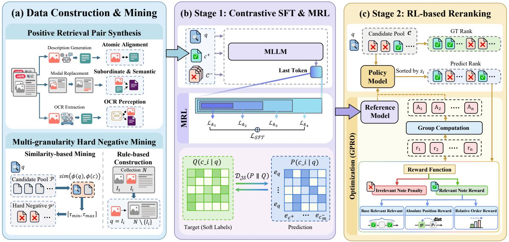
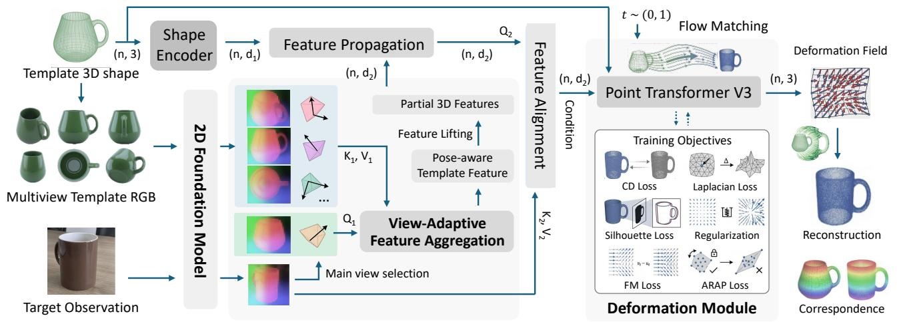
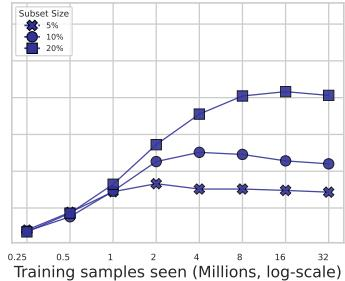

5 月 31 日：SLAD 等视觉表征论文归档
本页按日期归档近期论文，保留优先级、主题、来源与方法线索，方便回看同一批工作的研究脉络。
先读 SLAD。共享 LoRA adapter 减轻 teacher/student 特征错位，适合关注蒸馏式视觉表征压缩。 其余论文按 P1/P2 与主题顺序扫读，重点看方法图、消融设置和是否能迁移到通用视觉表征。
论文索引
 P1
P1
SLAD : Shared LoRA Adapters for Task Specific Distillation
中高相关；详见方法、贡献和实验边界。
方法：共享 LoRA adapter 减轻 teacher/student 特征错位，适合关注蒸馏式视觉表征压缩

P2UniNote: A Unified Embedding Model for Multimodal Representation and Ranking
中高相关；详见方法、贡献和实验边界。
方法：contrastive SFT + RL ranking + MRL 的多模态 embedding 方案，工业场景强但表征训练信号可迁移

P2Geometry-Guided Modeling of Foundation Features Enables Generalizable Object Shape Deformation Learning
中相关；详见方法、贡献和实验边界。
方法：把 foundation features 与模板拓扑、视角聚合结合，关注视觉基础特征如何承载几何泛化
minWM: A Full-Stack Open-Source Framework for Real-Time Interactive Video World Models
中相关；详见方法、贡献和实验边界。
方法：把视频 foundation model 改造成可交互 world model 的完整训练链，含 AR 训练和 few-step distillation
 P3
P3
VideoMLA: Low-Rank Latent KV Cache for Minute-Scale Autoregressive Video Diffusion
中相关；详见方法、贡献和实验边界。
方法：研究视频基础模型长时序 attention/KV 压缩，对视频预训练效率有间接价值
 P3
P3
YoCausal: How Far is Video Generation from World Model? A Causality Perspective
中相关；详见方法、贡献和实验边界。
方法：用真实视频反转构造 causal counterfactual benchmark，适合评估视频 world model 是否学到动态因果
A Geometric View of SRC: Learning Representations for Stable Residual Inference
中低相关；详见方法、贡献和实验边界。
方法：从 residual margin 与 span geometry 讨论表征稳定性，含 masked within-class self-expressiveness 目标

扫读How Much Is a Dataset Worth? Scaling Laws, the Vendi Score, and Matrix Spectral Functions
中低相关；详见方法、贡献和实验边界。
方法：用 ImageNet-scale 子集验证数据多样性/谱函数价值，作为视觉预训练数据筛选背景扫读